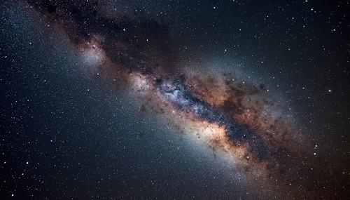

Structure and Shape
The Milky Way is a barred spiral galaxy about 100,000 light-years wide. It has four main spiral arms and a central bar-shaped bulge of older stars. Our Solar System sits in a smaller arm called the Orion Spur, roughly halfway between the centre and the edge.